Réseau sécurisé
Sécurisation d'un réseau avec un pare-feu Stormshield : mise en place de règles de filtrage et de NAT, d'une DMZ et d'un LAN.
Voir le rapportPortfolio — Réseaux & Télécoms
Étudiant en 3e année de BUT Réseaux & Télécommunications et alternant chez Orange en tant qu'exploitant réseau mobile.
Retrouvez sur ce site mon parcours, une sélection des projets réalisés pendant ma formation et un aperçu de mes compétences.
Objectif : intégrer une école d'ingénieur en télécommunications
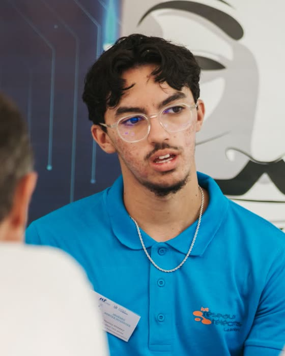
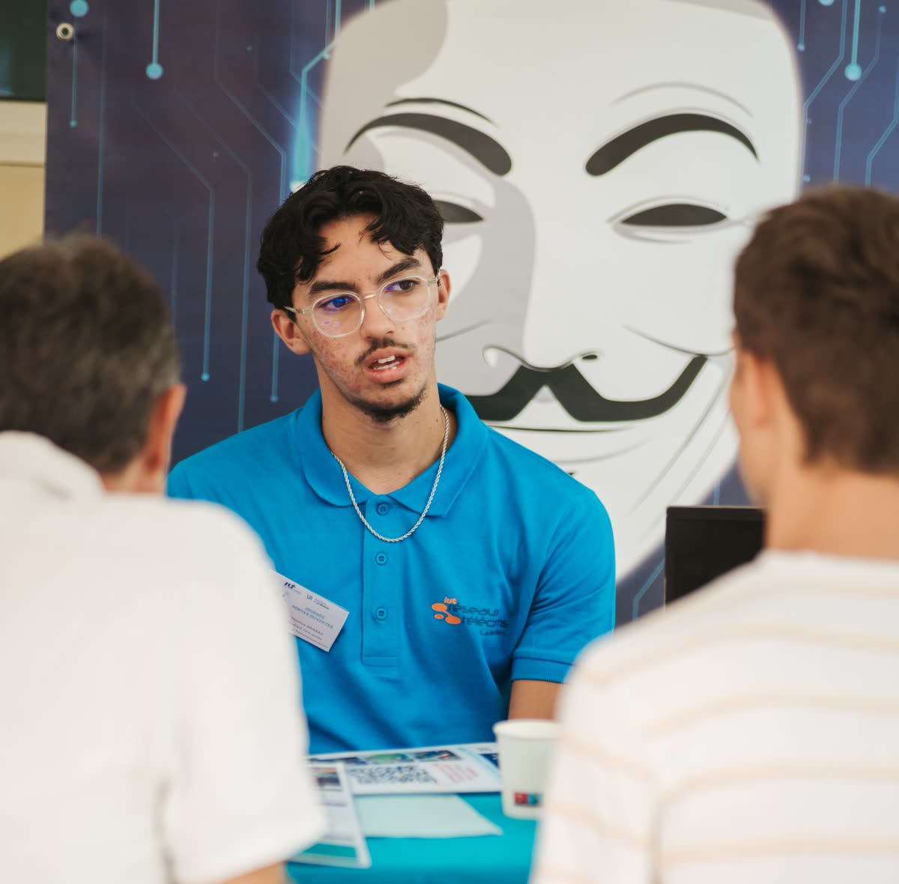
Je suis Thomas Hoarau, j'ai 20 ans et je suis étudiant en troisième année de BUT Réseaux & Télécommunications (parcours Réseaux d'Opérateurs et Multimédia) à l'IUT de La Réunion.
Je suis également alternant chez Orange, en tant qu'exploitant sur le réseau mobile.
Motivé et sérieux, je cherche toujours à m'améliorer et à acquérir de nouvelles compétences.
En dehors de mes études et de mes projets en réseaux & télécommunications, j'aime explorer ces domaines :
Passionné de football et de musculation, j'aime me dépasser mais aussi travailler en équipe.
Amoureux de la musique, je passe beaucoup de temps à en écouter et parfois à en faire.
Les films et les séries font partie de mes passe-temps favoris.
Fortement inspiré par l'univers de la mode, j'accorde une attention particulière aux vêtements et aux sneakers.
Découvrir de nouvelles cultures, de nouveaux paysages et modes de vie m'inspire beaucoup.
Apprendre de nouvelles choses est quelque chose à laquelle j'accorde beaucoup d'importance.
Sept. 2026 — aujourd'hui
Orange · Alternance
Développement, supervision et support sur le réseau mobile.
Avr. — juin 2026
Fondation Père Favron · Stage
Modernisation du réseau, déploiement Wi-Fi…
2025
IUT de La Réunion · Lycée Jean Joly
Présentation du BUT R&T lors de la journée portes ouvertes de l'IUT et du forum des anciens élèves du lycée Jean Joly.
2024 — 2027
IUT de La Réunion · Terre Sainte, Saint-Pierre
En cours (3e année), parcours Réseaux d'Opérateurs et Multimédia.
2024
Lycée Jean Joly · La Rivière Saint-Louis
Spécialité Systèmes d'Information et Numérique.
2024
MOOC de l'ANSSI — Cybersécurité
2022
Certification en langue — Allemand
—
Certification PIX
De nature sociable, je n'ai aucun mal à aller vers les autres et à communiquer.
J'ai l'habitude de prendre les devants et de travailler de manière autonome.
Face à une situation compliquée, je sais faire preuve de lucidité et garder mon calme.
Habitué au travail de groupe, la collaboration n'est pas un problème pour moi.
Voici quelques-uns des projets que j'ai réalisés dans le cadre de ma formation en Réseaux & Télécommunications.
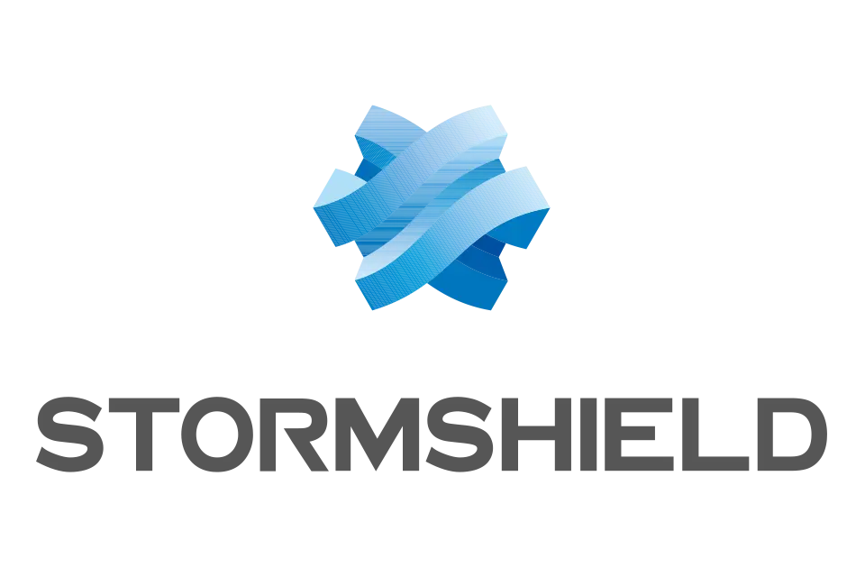
Sécurisation d'un réseau avec un pare-feu Stormshield : mise en place de règles de filtrage et de NAT, d'une DMZ et d'un LAN.
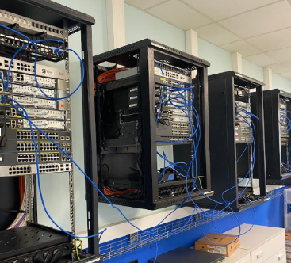
Création d'un mini-réseau d'opérateur et mise en place d'un VPN MPLS (BGP, MP-BGP, IGP…) sur des routeurs Cisco physiques.
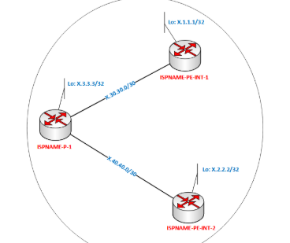
Création d'un mini-réseau d'opérateur et mise en place de relations de peering et de transit BGP avec un autre opérateur, simulé par une autre équipe.
Réflexion sur la conception d'une infrastructure de télécommunications pour un réseau mobile 4G/5G.
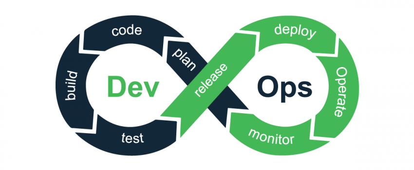
Introduction à la conteneurisation avec Docker, utilisation de Git et GitLab, et mise en place d'une pipeline CI/CD.
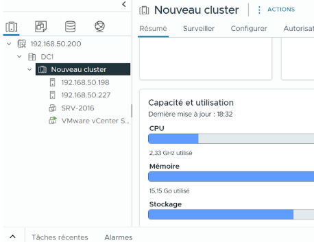
Création et configuration d'un datacenter et d'un cluster de plusieurs ESXi depuis une VM de gestion vCenter.
Réalisation d'un audit Wi-Fi professionnel pour mesurer la qualité du réseau Wi-Fi du département Réseaux & Télécoms.
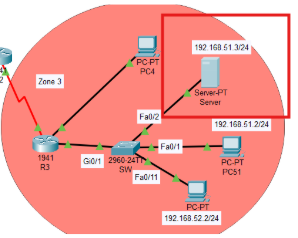
Mise en place d'un lab Packet Tracer complet : réseau OSPF multizone, routage inter-VLAN et règles de filtrage ACL.
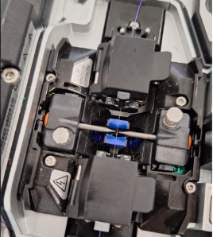
Mesures sur fibre optique par réflectométrie et photométrie, puis soudure de deux fibres à l'aide d'une cliveuse et d'une soudeuse.
Mise en place d'un lab Packet Tracer de VoIP permettant la communication entre deux réseaux différents via des serveurs TFTP et Call Manager Express.
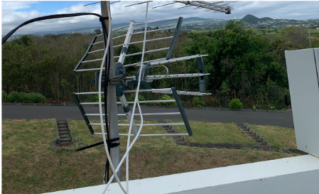
Installation d'antennes pour capter et analyser des signaux tels que la TNT, la radio FM ou encore les signaux ADS-B.
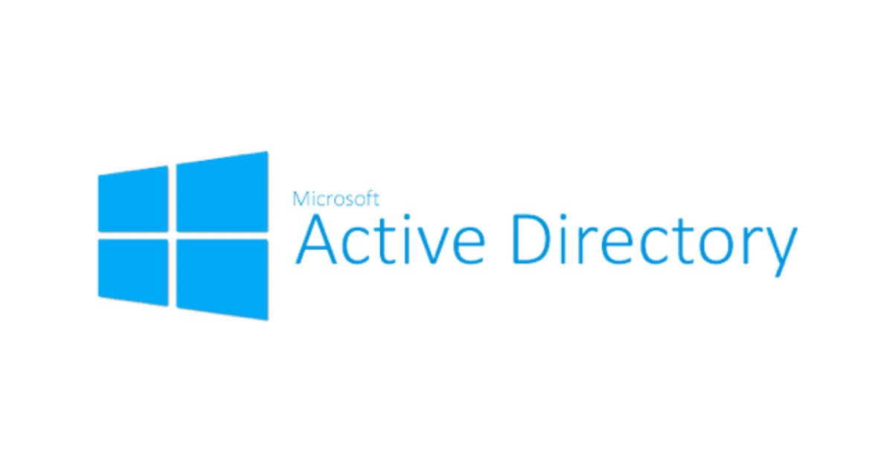
Mise en place d'un contrôleur de domaine Active Directory sous Windows Server 2022, conception et organisation d'un annuaire, et déploiement de GPO.
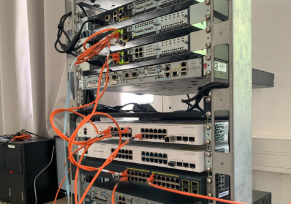
Mise en place d'une topologie réseau physique fonctionnelle et déploiement de services (Samba, Moodle, DHCP).
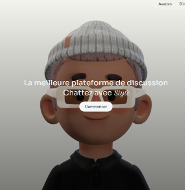
Développement d'une application web de messagerie permettant à plusieurs utilisateurs disposant d'un compte d'échanger des messages.
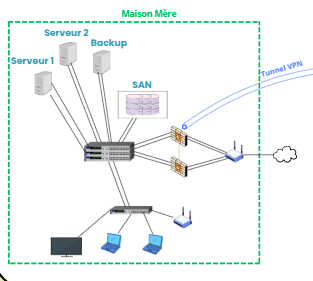
Conception complète du réseau d'une PME avec solution multimédia (SAN, pare-feu, VPN…) et réalisation d'un PoC : point d'accès Wi-Fi, portail captif, serveur de streaming…
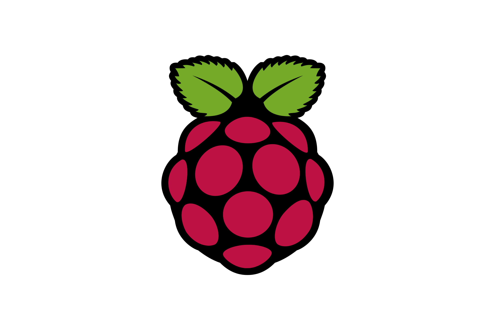
Configuration d'un Raspberry Pi pour piloter des LED et des capteurs à distance via SSH et des scripts Python.
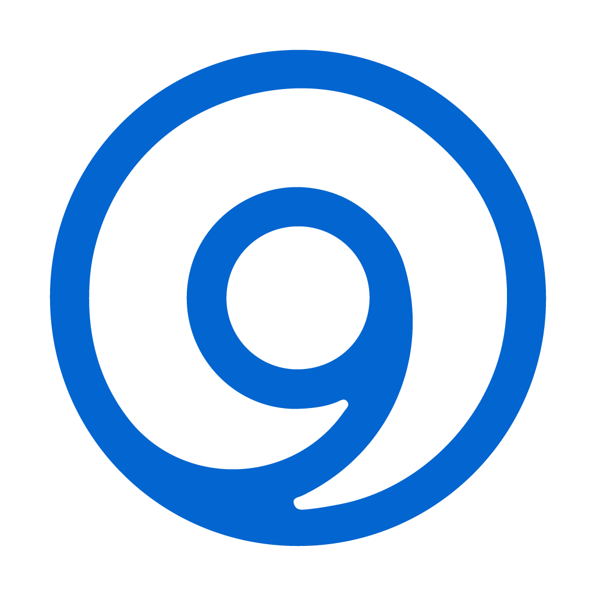
Installation et configuration d'un serveur DNS sous Linux avec Bind9.
Des projets menés de mon côté, en dehors de la formation.
Web · E-commerce · En cours
Création d'une boutique en ligne de vêtements (lekip.re), actuellement en cours de développement.
Automatisation · IA
Création d'une pipeline 100 % automatisée, pilotée par des agents IA, pour un projet personnel.
Voici quelques-uns des projets que j'ai réalisés en dehors du cadre de ma formation.
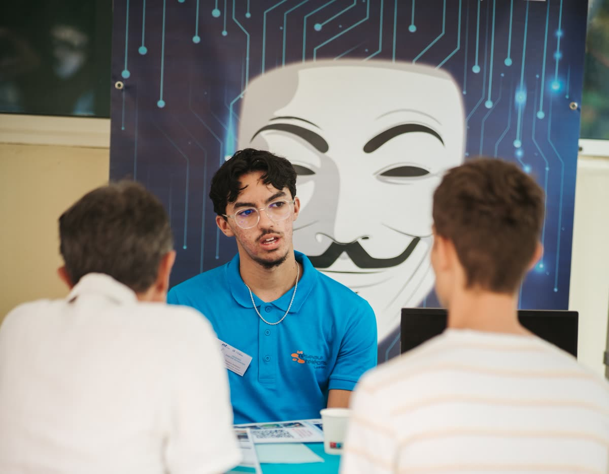
Présentation du BUT Réseaux & Télécommunications lors de la journée portes ouvertes de l'IUT : échanges avec de futurs étudiants à la recherche d'une formation post-bac.
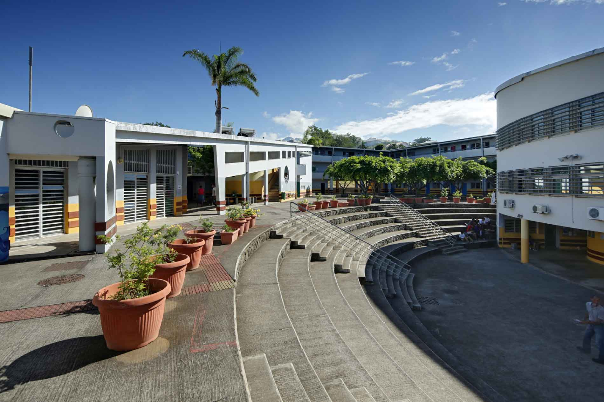
Participation au forum des anciens élèves 2025 du lycée Jean Joly afin de présenter ma formation aux lycéens de terminale.
Les certifications que je souhaite obtenir d'ici la fin de mon BUT.
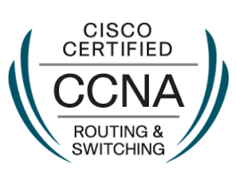
Le CCNA (Cisco Certified Network Associate) est une certification Cisco reconnue internationalement. Elle couvre les bases des réseaux informatiques, le fonctionnement des routeurs et des commutateurs, ainsi que les principaux protocoles utilisés dans les infrastructures professionnelles.
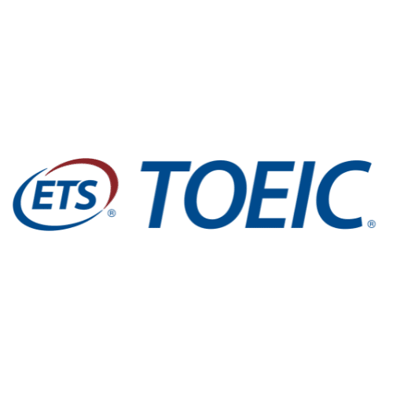
Le TOEIC (Test of English for International Communication) est une certification d'anglais très reconnue par les entreprises et les écoles d'ingénieurs.
Après mon BUT Réseaux & Télécommunications, j'aimerais intégrer une école proposant une formation d'ingénieur dans le domaine des télécommunications, comme celles-ci :
École de l'Institut Mines-Télécom proposant une formation d'ingénieur spécialité Informatique, Télécommunications et Réseaux.
Attendus : mathématiques, électronique, réseaux / télécoms.
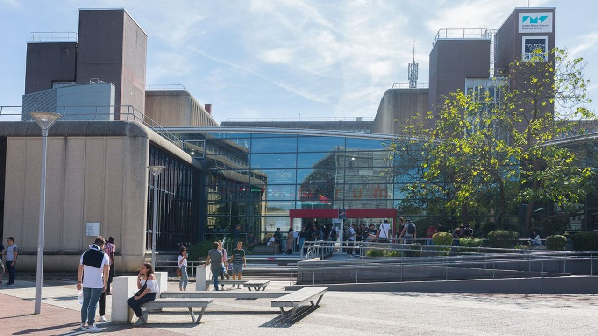
Forme des ingénieurs généralistes du numérique, avec des approfondissements possibles en réseaux, télécoms, cybersécurité, etc.
Attendus : solide profil technique en réseaux, télécoms, informatique embarquée et anglais.
Propose une formation d'ingénieur en Télécommunications, Services et Usages.
Attendus : solide profil technique en réseaux, télécoms et informatique.
Retrouvez la description complète de mon projet professionnel ici :
Voir mon projet professionnel